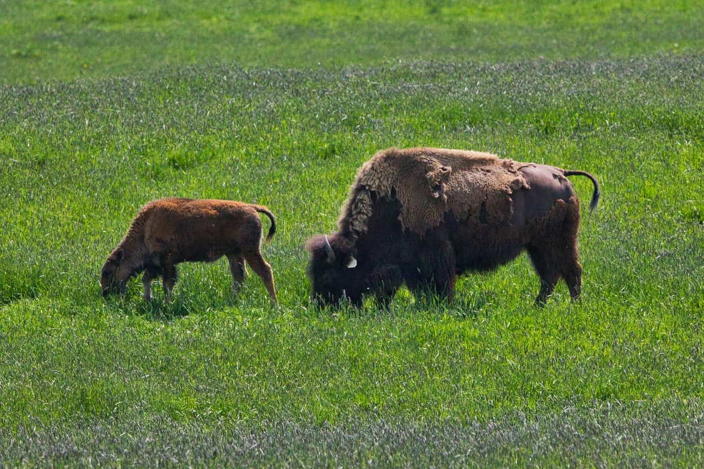
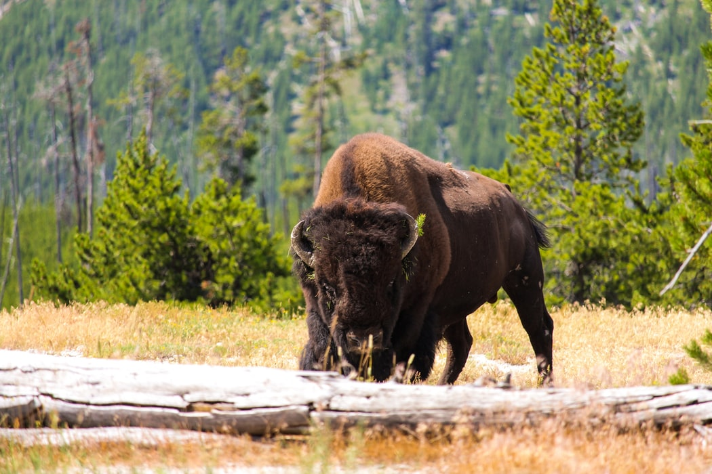
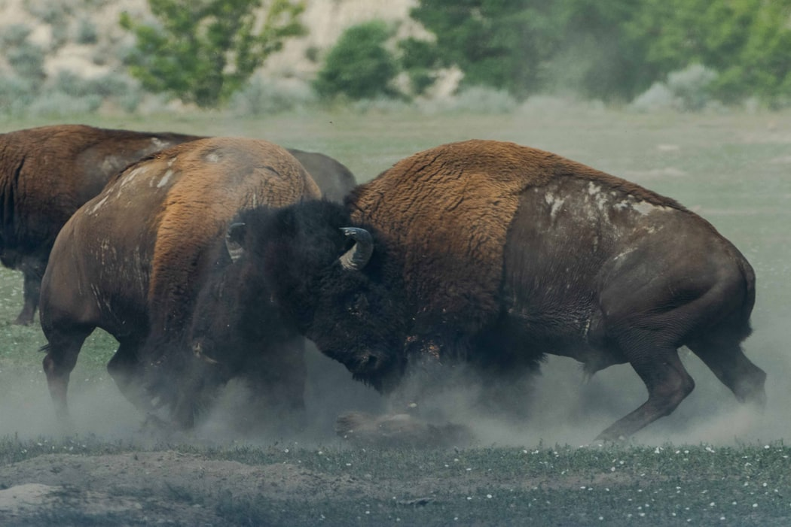

American Bison As Specie
Bison, symbolic animals of the Great Plains, are often mistakenly
called buffaloes. By any name, they are formidable beasts and the
heaviest land animals in North America.


Size and Diet
Bison, despite their massive size, are swift on their feet. When
necessary, they can reach speeds of up to 40 miles (65 kilometers)
per hour. Their curving, pointed horns can reach a length of 2
feet (61 cm). Females (cows) and mature males (bulls) normally
live in tiny, distinct bands, but during the summer mating season,
they congregate in very huge herds. Males compete over mating
rights, although such bouts are rarely deadly. After a nine-month
pregnancy, females give birth to one calf. These large grazers
feed on plains grasses, herbs, shrubs, and twigs. They regurgitate
their food and chew it as cud before final digestion.
Animal Behaviour in Herds
Females (cows) and mature males (bulls) normally live in tiny,
distinct bands, but during the summer mating season, they
congregate in very huge herds. Males compete for sexual supremacy,
although such battles are rarely harmful. After a nine-month
pregnancy, females give birth to one calf.


Cultural importance
Bison formerly roamed the Great Plains and most of North America,
and they were vital to Plains Indian communities. During the
nineteenth century, settlers slaughtered 50 million bison for
food, sport, and to deprive Native Americans of their most
valuable natural resource. The once-colossal herds had been
reduced to a few hundred animals. Bison populations have recovered
substantially, and around 500,000 bison reside in preserves and
ranches where they are farmed for meat.